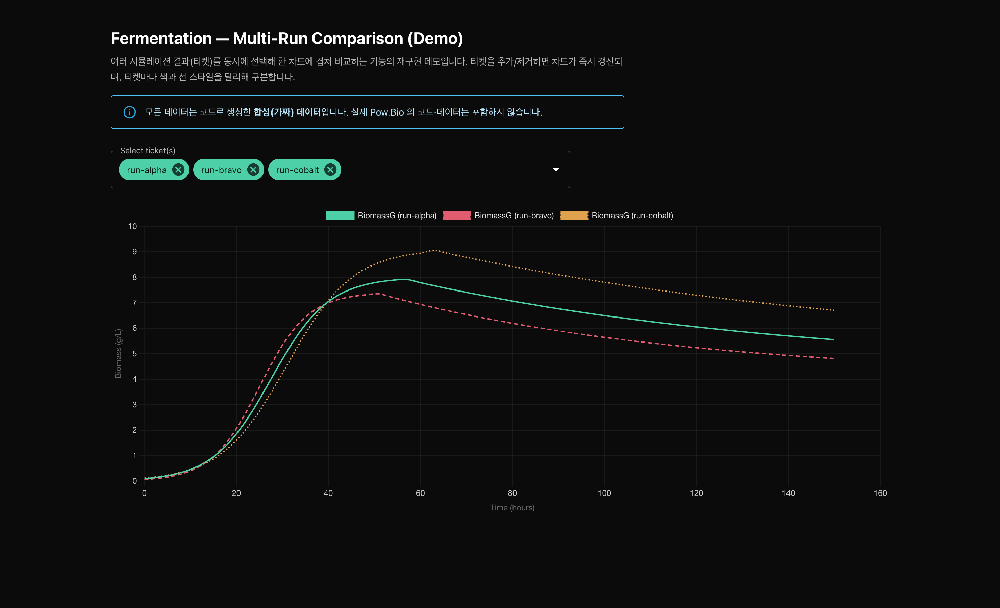

Pow.Bio · Data Team 인턴
개요
연구진 인터뷰에서 실험 조건별 결과를 비교하려면 여러 탭을 열어야 한다는 불편을 확인했습니다. 여러 실험을 선택해 한 차트에 겹쳐 볼 수 있도록 화면과 데이터 조회 방식을 수정했습니다.

재현 데모: 여러 실험 결과를 한 차트에 겹쳐 비교하는 화면. 회사 데이터 대신 합성 데이터를 사용했습니다.
개선 내용
실험 결과를 하나씩 열어 볼 수 있었습니다. 조건별로 비교하려면 탭을 여러 개 띄우거나 이미지를 내려받아 나란히 놓아야 했습니다.
여러 실험을 선택하면 한 차트에 겹쳐 그려지고, 실험별 색과 선 모양으로 구분됩니다. 비교한 차트는 이미지로 내보낼 수 있습니다.
담당 업무
연구진이 실험 결과를 비교하는 과정을 인터뷰하고, 여러 결과를 동시에 조회해야 한다는 요구를 정리했습니다.
단일·다중 실험을 선택할 수 있도록 화면을 수정하고, 여러 결과를 함께 불러오도록 백엔드 API 응답 구조를 조정했습니다. 실험별 색과 선 모양을 구분하고 차트 이미지 내보내기 기능을 추가했습니다.
DB에서 API를 거쳐 화면에 표시되는 흐름을 다이어그램으로 정리하고, DB 접근 문서와 기능 사용 가이드를 작성했습니다.
결과/성과
조회 방식
단일 → 다중 실험 한 차트에 겹쳐 비교
데이터 연동
API 응답 구조 조정 여러 결과 동시 조회
문서
3종 데이터 흐름 · DB 접근 · 사용 가이드
작업을 돌아보며
처음에는 차트 화면의 문제로 보였지만, 여러 실험 결과를 함께 불러오려면 API 응답 구조도 바꿔야 했습니다. 화면 개발과 백엔드 연동을 함께 진행했고, 변경한 데이터 흐름과 사용 방법을 인수인계 문서로 남겼습니다.
재현 데모는 React 18 · Vite · MUI · Chart.js 로 만든 프론트엔드 단독 구성이며, 합성 데이터를 사용합니다.